✅ Probat
Afirmații susținute de dovezi verificabile. Sursele sunt lângă fiecare, ca să le puteți controla singuri.
747 verificări, cele mai noi întâi. Vezi și: ❌ Contrazis · ⚠️ Contestat · 🔍 În verificare
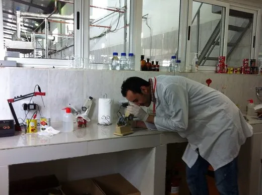
August 2026, la egalitate cea mai fierbinte lună înregistrată vreodată la nivel global, anunță Copernicus
Serviciul european Copernicus pentru Schimbări Climatice a anunțat pe 10 septembrie 2026 că luna august a fost, la egalitate cu iulie 2023, cea mai fierbinte…
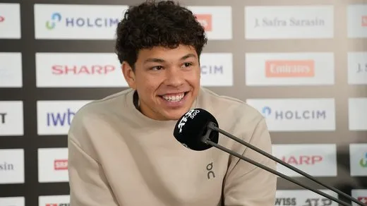
Ben Shelton îl elimină pe Carlos Alcaraz în cel mai târziu meci din istoria US Open — finală garantată cu doi americani în semifinală, premieră după 23 de ani
Ben Shelton l-a învins pe campionul en-titre Carlos Alcaraz cu 6-7, 6-1, 6-3, 1-6, 7-6, într-un sfert de finală încheiat la 3:33 dimineața (ora New…
BCE majorează dobânda-cheie la 2,50%, a doua oară în 2026 — Consiliul s-a reunit la Berlin, nu la Frankfurt, pe fondul inflației alimentate de conflictul din Orientul Mijlociu
Consiliul guvernatorilor BCE a decis pe 10 septembrie 2026 o creștere de 0,25 puncte procentuale a celor trei dobânzi de referință — depozit la 2,50%…
Manda (PSD) acuză PNL și USR pe fondul scăderii consumului — cifrele lui despre comerțul cu amănuntul se potrivesc cu INS, dar „a 12-a lună consecutivă” nu are o sursă unică
Secretarul general PSD, Claudiu Manda, a acuzat pe 4 septembrie 2026 PNL și USR că „inventariază voturile” în timp ce INS arată o scădere a consumului: -5,4%…
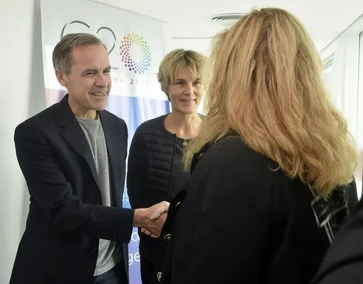
Canada a aplicat pe 8 septembrie tarife de represalii de 27,6 miliarde de dolari — mai mult decât „dolar pentru dolar” promis — iar Trump a răspuns cu interdicții de import
După colapsul negocierilor comerciale din 21 august, Canada a aplicat pe 8 septembrie 2026 tarife de represalii pe 27,6 miliarde de dolari de bunuri…

O poză reală, o persoană greșit identificată: cum a devenit consiliera lui Nicușor Dan ținta unui fake news văzut de circa un milion de oameni
Martina Orlea, consiliera prezidențială pentru combaterea dezinformării, a fost confundată pe Facebook, TikTok și LinkedIn cu procuroarea Ioana, fotografiată…
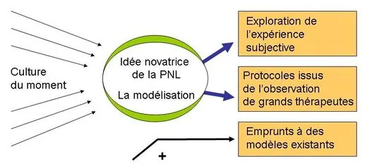
PNL a lăudat pe Facebook execuția bugetară pe 7 luni — cifrele oficiale ale Finanțelor confirmă, dar durabilitatea rămâne un semn de întrebare
PNL a prezentat pe Facebook un bilanț al guvernării Bolojan pe primele 7 luni din 2026: deficit redus cu 37%, investiții mai mari cu aproape 15 miliarde de…
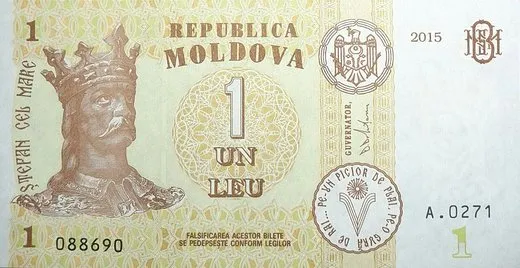
Inflația anuală în Moldova a ajuns la 7% în august — dar cifra nu include încă scumpirea de 41% a gazului, intrată în vigoare abia pe 1 septembrie
Biroul Național de Statistică a publicat pe 10 septembrie 2026 indicii prețurilor de consum pentru august: +0,2% față de iulie, +4,9% de la începutul anului…
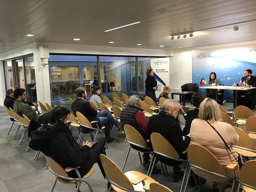
CEC a fost nevoită să stabilească ea însăși 15 noiembrie pentru alegerea bașcanului Găgăuziei, după ce Adunarea Populară a eșuat de trei ori — a doua oară în instanță
Comisia Electorală Centrală a stabilit pe 1 septembrie 2026 data de 15 noiembrie pentru alegerea bașcanului Găgăuziei și a celor 35 de deputați ai Adunării…
România, cea mai mare inflație din regiune și cele mai scumpe obligațiuni — dar „singura economie în recesiune” nu e o concluzie unanimă a institutelor
O analiză publicată pe 7 septembrie 2026 de Economedia, bazată pe date wiiw și Erste Group, arată România ca singura economie din Europa Centrală și de Est…
Guvernul Luca Niculescu se blochează la circa 200 din 233 de voturi — UDMR cere ca PSD să rupă cu AUR și SOS, Grindeanu și Hunor rămân fără acord
Discuția de marți seară (8 septembrie 2026) dintre liderul PSD Sorin Grindeanu și președintele UDMR Kelemen Hunor s-a încheiat fără înțelegere: PSD ar avea…
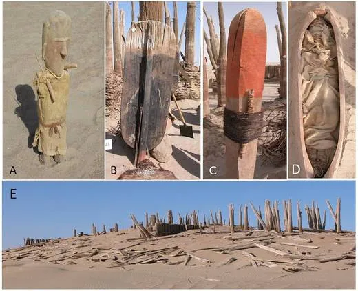
Primul os de antebraț Denisovan din lume, găsit într-o peșteră din sud-vestul Chinei, printre 60.000 de fragmente osoase cercetate
Un studiu publicat pe 9 septembrie 2026 în Nature, condus de cercetători de la Institute of Vertebrate Paleontology and Paleoanthropology al Academiei…
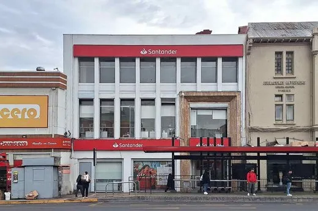
Banca centrală a Chile își înjumătățește prognoza de creștere economică pentru 2026, la 0,25–0,75%, și menține dobânda neschimbată deși inflația trece de țintă
Banca Centrală a Chile a redus, în Raportul de Politică Monetară (IPoM) publicat pe 9 septembrie 2026, intervalul de creștere economică estimat pentru acest…
Incendiul de pe feribotul MV June Aster, lângă Coron, în Filipine: 76 de morți, 13 dispăruți — anchetatorii vorbesc despre două explozii succesive dinspre cala de marfă
Feribotul MV June Aster a luat foc în seara de miercuri, 9 septembrie 2026, în apropiere de Coron, în provincia Palawan, în timp ce se afla pe ruta…
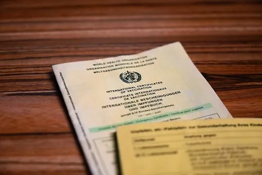
Vaccin experimental combinat rabie-Lassa, sigur și cu anticorpi la 100% dintre voluntari — dar doar în primul test pe oameni
Un vaccin experimental care combină protecția împotriva rabiei cu cea împotriva febrei Lassa — LASSARAB — a produs anticorpi la toți cei 44 de voluntari…
Un atașat militar chinez îi lasă un bilet pe masă ministrului filipinez al Apărării, în timp ce vorbea la un forum din Seul — „Sigur, pentru că ați pierdut”
🌍 Pe 9 septembrie 2026, în timp ce ministrul filipinez al Apărării, Gilberto Teodoro Jr., răspundea unei întrebări despre coerciția Chinei în Marea Chinei de…
IRGC susține că a provocat „daune grave” unor distrugătoare americane și bazei din Iordania; Amman confirmă doar rachete interceptate, fără victime
🌍📡 Pe 9 septembrie 2026, Garda Revoluționară iraniană (IRGC), citată de presa de stat PressTV, SUSȚINE că a provocat „daune grave” la doi distrugătoare…
Consiliul Guvernatorilor AIEA trimite Iranul în fața Consiliului de Securitate ONU — prima referire de acest fel în 20 de ani. Rusia, China și Niger au votat împotrivă
Consiliul Guvernatorilor Agenției Internaționale pentru Energie Atomică (AIEA) a adoptat, miercuri, 9 septembrie 2026, o rezoluție prin care raportează…
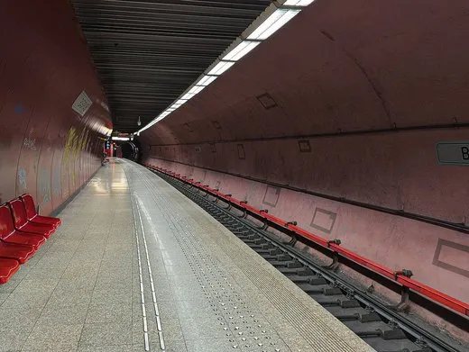
Metroul din București riscă să se oprească din 16 septembrie — Metrorex are doar 3.000 de lei în cont, spune sindicatul, după ce subvenția de 63,4 milioane lei a fost blocată
Uniunea Sindicatelor Libere Metrou (USLM) a avertizat, miercuri, 9 septembrie 2026, că angajații Metrorex ar putea rămâne fără salariul din 12 septembrie…

Nicușor Dan a promulgat legea care anulează incompatibilitatea consilierilor locali angajați la stat — la o lună după ce prevederea inversă intrase în vigoare
Președintele Nicușor Dan a promulgat miercuri, 9 septembrie 2026, o lege inițiată de PSD care abrogă regulile ce puneau în incompatibilitate mii de…
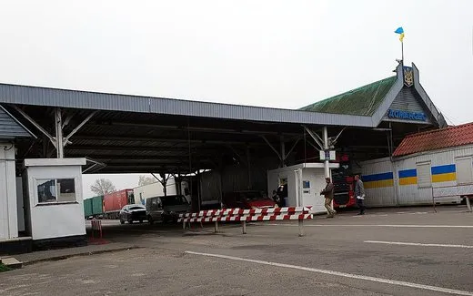
Atac cu drone rusești la câțiva metri de Moldova: doi morți la Starokazacie, Rusia spune că punctul era țintă „militară”
În noaptea de 8 spre 9 septembrie 2026, între orele 23:35 și 00:05, drone rusești au lovit punctul de trecere a frontierei Starokazacie, pe partea…
Ungaria expulzează 10 diplomați ruși — prima ruptură de acest fel din 2018, sub noul guvern Magyar
Ministrul ungar de externe, Anita Orbán, a anunțat pe 8 septembrie 2026 expulzarea a 10 diplomați ruși, pentru activități „incompatibile cu statutul…
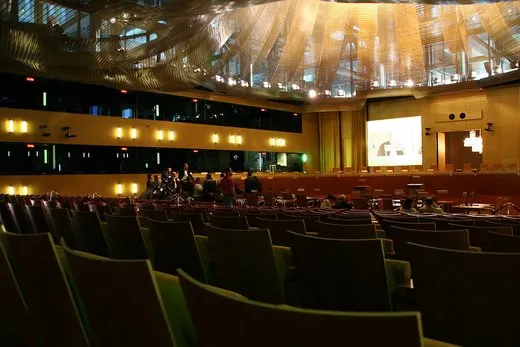
Curtea de Apel București suspendă procedura Guvernului pentru desemnarea candidatului României la CJUE
La cererea unei judecătoare de la Curtea de Apel Craiova, instanța bucureșteană a suspendat pe 8 septembrie 2026 memorandumul Guvernului Bolojan din 27…
Senatul elimină examenul suplimentar de admitere la liceu, la o săptămână după ce intrase în vigoare prin ordin de ministru
Senatul, cameră decizională, a adoptat marți, 8 septembrie 2026, cu 104 voturi pentru și 3 abțineri, desființarea examenului separat de admitere la liceu —…
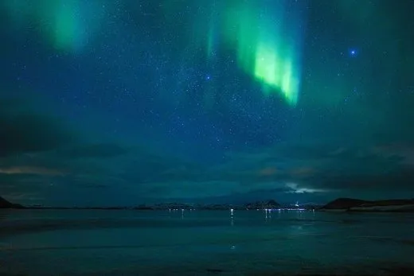
Patru erupții solare consecutive au lovit Pământul pe 8-9 septembrie — NOAA a emis alertă de furtună geomagnetică, cu auroră posibilă până în nordul Franței și al SUA
Cel puțin patru ejecții de masă coronală (CME) pornite din regiunea activă a Soarelui AR4524 pe 5-6 septembrie 2026 au început să lovească magnetosfera…
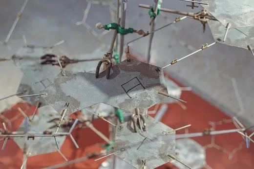
Cel mai mare studiu genetic despre personalitate a găsit 1.260 de variante ADN legate de trăsăturile „Big Five” — dar ele explică doar o mică parte din diferențele dintre oameni
Un studiu publicat pe 2 septembrie 2026 în Nature, realizat de consorțiul Revived Genomics of Personality pe datele genetice și de personalitate a 1,14…
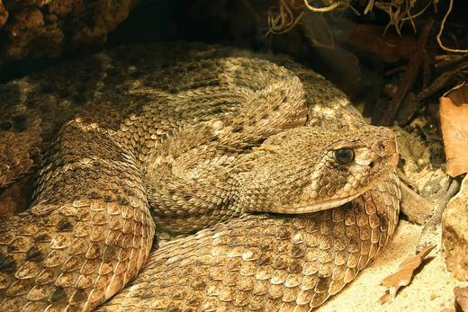
Cercetătorii au găsit în sângele șarpelui-cu-clopoței proteine care neutralizează venin de viperă de zece ori mai bine decât antiveninul actual — dar doar în laborator
Un studiu publicat pe 29 iulie 2026 în Proceedings of the National Academy of Sciences arată că, atunci când sunt combinate, anumite proteine găsite în…
Houthii lovesc simultan patru obiective din Arabia Saudită cu rachete și drone — coaliția saudită confirmă 73 de răniți
🌍 În dimineața de 8 septembrie 2026, rebelii houthi din Yemen au lansat zeci de rachete balistice și drone spre rafinăriile Aramco din Najran și Abha, baza…
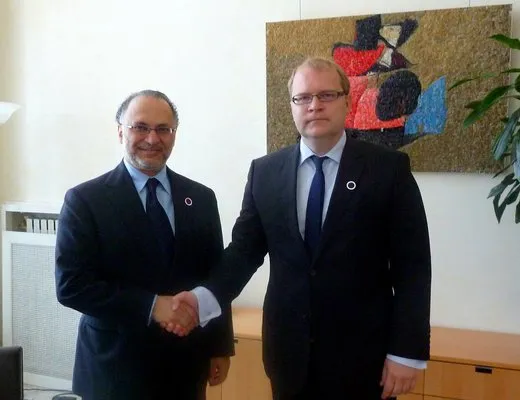
Qatar și Emiratele spun, la un forum din Abu Dhabi, că Golful „nu se mai poate baza doar pe SUA” pentru securitate
🌍 La Hili Forum din Abu Dhabi, pe 7-8 septembrie 2026, purtătorul de cuvânt al diplomației qatareze, Majed Al Ansari, și consilierul prezidențial emiratez…
Salariile din Japonia cresc cel mai rapid din 1997 — piețele dau șanse mari ca banca centrală să majoreze dobânda pe 18 septembrie
🌍 Datele publicate pe 8 septembrie 2026 arată că salariile nominale din Japonia au urcat 4,7% în iulie față de anul trecut — cea mai mare creștere din…
Ministerul Economiei nu are bani pentru salariile angajaților preluați de la Digitalizare — ministrul Miruță confirmă, dar sursele nu se pun de acord la câți oameni afectează
Ministrul Economiei, Digitalizării, Antreprenoriatului și Turismului, Radu Miruță, a confirmat că bugetul întocmit la începutul anului 2026 nu a inclus…
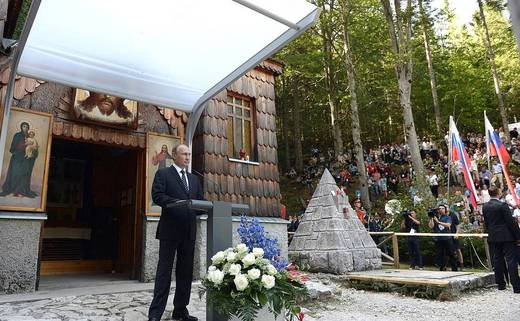
Kremlinul spune că Putin l-a asigurat pe Trump că Rusia „nu are planuri agresive” față de Europa — apelul de o oră nu a adus un armistițiu
Președintele SUA, Donald Trump, și președintele rus, Vladimir Putin, au vorbit telefonic timp de o oră, pe 8 septembrie 2026, la două zile după vizita…
Trei lideri AUR — Piperea, Lulea, Murad — cer negocieri oficiale cu PSD pentru guvernare, în contradicție cu linia lui George Simion
Europarlamentarul Gheorghe Piperea, deputatul Marius Lulea și senatorul Mohammad Murad s-au declarat, pe 7 și 8 septembrie 2026, deschiși unor negocieri…
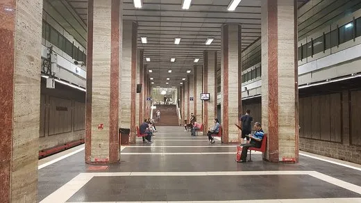
O dronă a survolat 17 minute Republica Moldova și a intrat în România, apoi o dronă a căzut într-un lan la Rîșcani — fără victime
Marți, 8 septembrie 2026, un aparat de zbor de tip Shahed a intrat dinspre Ucraina în spațiul aerian al Republicii Moldova, l-a traversat timp de circa 17…

Politica fiscală 2027: guvernul Tofan mizează pe 5,1 miliarde de lei în plus, după ce proiectul precedent a stârnit critici și a precedat demisia lui Munteanu
Guvernul Tofan a aprobat pe 8 septembrie 2026 politica fiscală și vamală pentru 2027, cu venituri suplimentare estimate la 5,1 miliarde de lei — mai ales din…

Ancheta Bolojan–Tănăsescu intră în audieri: niciunul dintre cei doi nu s-a prezentat, iar USR și PNL cer să fie inclus și zborul CCR–Mykonos
Comisia pentru Constituționalitate a Senatului, condusă de senatoarea Cosmina Cerva (PACE), a ținut marți, 8 septembrie 2026, primele audieri din ancheta…
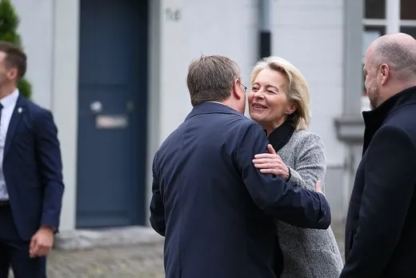
Von der Leyen promite 200 de milioane de euro Groenlandei, chiar când NATO începe un exercițiu arctic cu 400 de militari — pe fondul amenințărilor lui Trump
Președinta Comisiei Europene, Ursula von der Leyen, a anunțat luni, 7 septembrie 2026, la Nuuk, un pachet de investiții de 200 de milioane de euro (232 de…
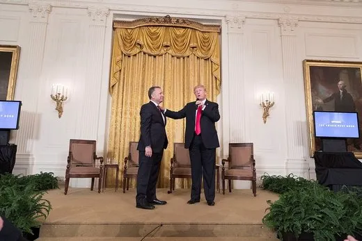
Trimișii lui Trump vorbesc despre „progrese substanțiale” după Moscova și Kiev — dar Zelenski spune că se așteaptă ca războiul să continue
Emisarii lui Trump, Steve Witkoff și Jared Kushner, au avut peste trei ore de discuții cu Vladimir Putin la Moscova pe 5 septembrie 2026, apoi au mers la…
Sub un morman de bolovani din Utah stă ascuns un rezervor de gheață cât 600 de bazine olimpice, arată măsurători gravimetrice
Geologi de la Universitatea Utah au măsurat prin gravimetrie glaciarul de rocă Timpanogos — o formațiune care arată ca un morman obișnuit de bolovani — și au…
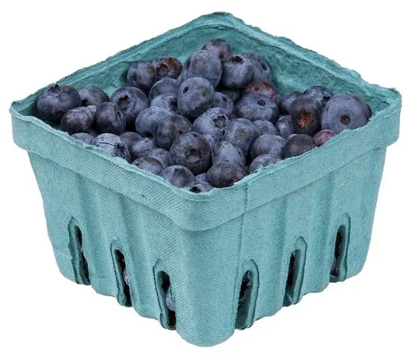
Un compus din afine a redus depunerea de grăsime în celule musculare cultivate în laborator, arată un studiu japonez
O echipă condusă de Takakazu Mitani, de la Universitatea Shinshu din Japonia, a arătat că pterostilbena — un compus natural din afine și struguri — a redus…
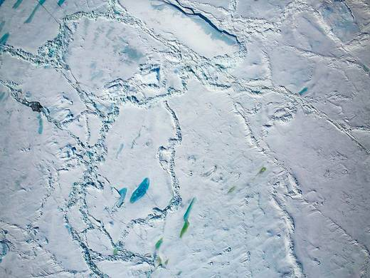
Gheața arctică din august 2026 a urmărit îndeaproape traiectoria catastrofală din 2012 — dar un episod atmosferic a oprit-o la timp, arată NSIDC
Extinderea gheții arctice din august 2026 a fost a șaptea cea mai mică din cei aproape 50 de ani de observații prin satelit, la doar 840.000 km² peste…
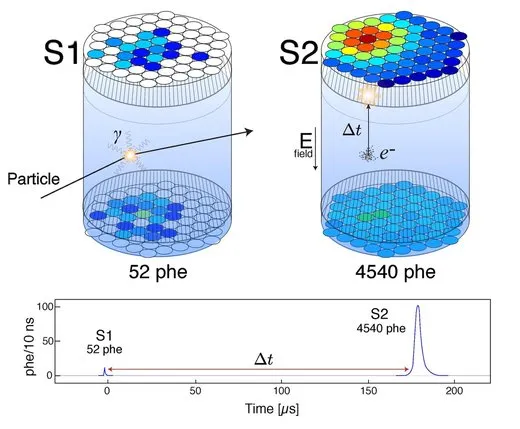
Un detector de materie întunecată din Dakota de Sud a înregistrat un semnal neobișnuit — dar oamenii de știință spun clar că nu e o descoperire
Experimentul LUX-ZEPLIN (LZ), care caută materie întunecată la un kilometru sub pământ în Dakota de Sud, a găsit un singur eveniment greu de explicat prin…
KCNA: distrugătorul Kang Kon face parte din „sistemul de contralovire nucleară” al Coreei de Nord — dar nici presa de stat nu confirmă că nava chiar poartă arme nucleare
Kim Jong Un a asistat pe 6 septembrie 2026, la portul Wonsan, la punerea în funcțiune a distrugătorului Kang Kon — a doua navă din clasa Choe Hyon, după ce…
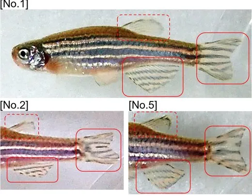
Studiu pe pești zebră: un semnal imunitar descoperit acum arată de ce li se regenerează măduva spinării — la oameni, nu se știe încă
Cercetători de la Centrul pentru Terapii Regenerative din Dresda (CRTD) și Universitatea Edinburgh au identificat mecanismul prin care o parte din celulele…

Guvernul pregătește denunțarea acordului CSI privind combaterea traficului de ființe umane, fără mecanism alternativ anunțat public
Guvernul Republicii Moldova a pus în discuție, pentru ședința din 9 septembrie 2026, un proiect de denunțare a Acordului privind cooperarea statelor membre…
Grecia: Mitsotakis promite 2,2 miliarde euro, Tsipras 7,39 miliarde — dar cifrele nu se compară direct
La tradiționalul Târg Internațional de la Salonic, premierul grec Kyriakos Mitsotakis a anunțat, pe 5 septembrie 2026, un pachet de măsuri economice de 2,2…
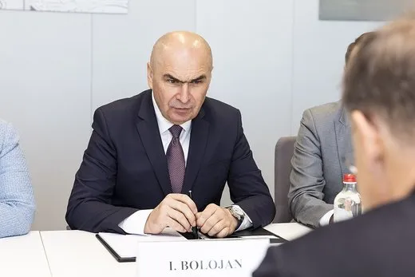
Bolojan spune că deficitul a scăzut cu 37% și cere „rapid” un premier — cifrele sunt oficiale, dar omit cât a crescut costul dobânzilor
Premierul interimar Ilie Bolojan a cerut luni, 7 septembrie 2026, partidelor un „guvern cu puteri depline” cât mai repede, susținând că măsurile de…

PNL și USR au depus, în sfârșit, sesizarea la CCR anunțată încă de pe 1 septembrie despre Biroul Permanent al Camerei Deputaților
La o săptămână după ce au părăsit sala plenului în semn de protest, deputații PNL și USR au depus luni, 7 septembrie 2026, sesizarea la Curtea…
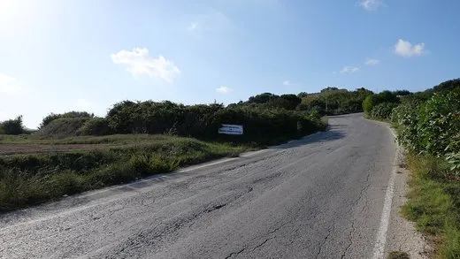
Malta: omul de afaceri Yorgen Fenech, achitat de acuzația că a comandat asasinarea jurnalistei Daphne Caruana Galizia — procuratura ia în calcul un apel
Un juriu din Malta l-a achitat pe 2 septembrie 2026, cu un verdict de 8 la 1, pe omul de afaceri Yorgen Fenech de acuzațiile de complicitate la asasinarea…
Șase state „mari plătitoare” ale UE cer tăieri de „sute de miliarde” din bugetul 2028-2034 — dar declarația comună evită orice cifră fermă
Cancelarul german Friedrich Merz a găzduit la Berlin, pe 27 august 2026, liderii Austriei, Danemarcei și Finlandei (Olanda și Suedia, prin videoconferință)…
Rusia lovește a doua oară în șase zile punctul de trecere Orlivka, la granița Ucrainei cu România
În noaptea de 6 spre 7 septembrie 2026, forțele ruse au lovit din nou cu drone punctul de trecere ucrainean Orlivka, capătul feribotului peste Dunăre spre…
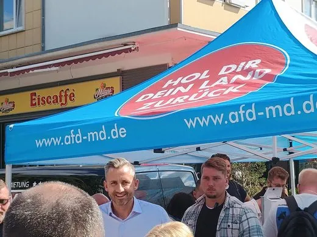
Saxonia-Anhalt: rezultatul final confirmă victoria AfD, cu 43,8% — sub exit poll, dar cu prezență record la vot din 1990
Numărătoarea finală din Saxonia-Anhalt, publicată luni, 7 septembrie 2026, confirmă victoria partidului de extremă dreapta AfD cu 43,8% și 39 de mandate —…
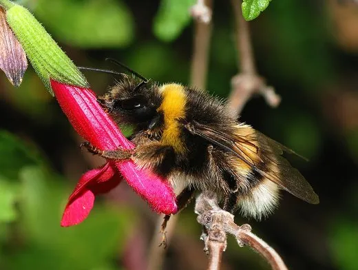
Un studiu pe 47 de specii și 800.000 de observații: încălzirea a redus deja habitatul potrivit pentru bondarii europeni, cu până la 19% în unele zone
O echipă de cercetători belgieni (ULB, VUB, UMons, UCLouvain, KU Leuven, UAntwerp), condusă de Bastien De Tandt și Simon Dellicour, a analizat aproape 120 de…
Sonda Solar Orbiter a surprins cea mai clară imagine de până acum a graniței magnetice a Soarelui, la doar 0,28 unități astronomice
Un studiu condus de Southwest Research Institute (SwRI), cu date de la misiunea comună ESA/NASA Solar Orbiter, a analizat o traversare a „foii de curent…
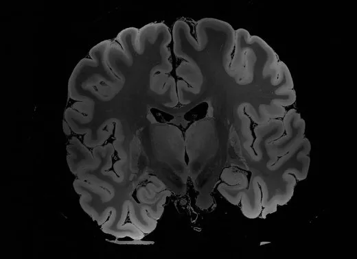
Cercetători de la Ohio State au blocat o proteină numită SET și au oprit formarea tumorilor de glioblastom în modele preclinice
Un studiu publicat în revista Cancer Letters de o echipă de la Ohio State University Comprehensive Cancer Center – James arată că blocarea proteinei SET a…
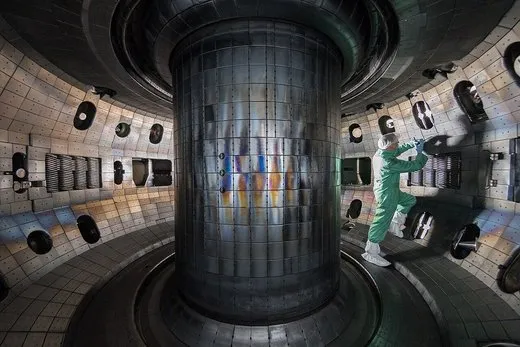
Un cadru de inteligență artificială de la Princeton a controlat plasma de fuziune în circa 20 de milisecunde, pe un reactor experimental real
Cercetători de la Princeton Plasma Physics Laboratory (PPPL) și Universitatea Princeton au testat, în cinci experimente pe tokamakul DIII-D din San Diego, un…
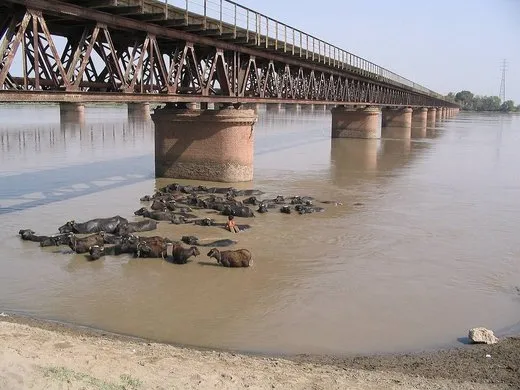
Pakistan: NDMA urcă bilanțul musonului la 180 de morți din iunie, în timp ce alte ploi sunt anunțate pentru Sindh
🌍 Autoritatea Națională de Gestionare a Dezastrelor din Pakistan (NDMA) a raportat, pe 3-4 septembrie 2026, 180 de morți și 509 răniți de la începutul…

ISRO respinge zvonurile de privatizare, după ce angajații au cerut clarificări pe o declarație a șefului IN-SPACe
🌍 Agenția Spațială Indiană (ISRO) a declarat duminică, 6 septembrie 2026, că informațiile privind o eventuală privatizare sunt „complet nefondate” și că…
Iran anunță o „zonă interzisă” lângă Hormuz: orice navă care intră va fi sancționată
🌍 Mohsen Rezaei, șeful Consiliului Suprem de Securitate Națională al Iranului, a anunțat duminică, 6 septembrie 2026, că Teheranul va declara în zilele…
Vicepreședinta Filipinelor, Sara Duterte, eliberată pe cauțiune după un mandat de arestare pentru trei capete de acuzare de amenințări grave la adresa președintelui Marcos
Un tribunal din Quezon City a emis, vineri, 4 septembrie 2026, un mandat de arestare pe numele vicepreședintei filipineze Sara Duterte, pentru trei capete de…